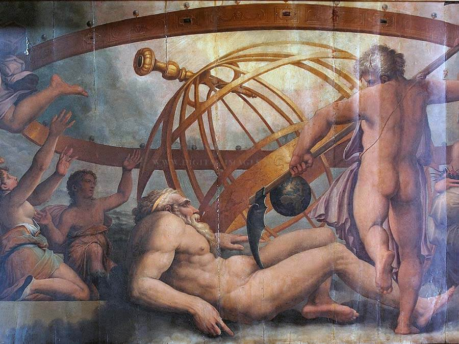

According to Greek mythology and the ancient Greek religion, the Titans were the pre-Olympian gods. Their parents were Gaia (Mother Earth) and Uranus (god of heavens). They had two other species as siblings, born also from the union between Gaia and Uranus: the Hecatoncheires (meaning "hundred-handed ones") and the Cyclops (meaning “circle-eyed”).
How did the Titans become rulers of the world?
The first Titans were twelve; six male and six female. The youngest one was Cronus. At some point, Uranus decided that he did not like the Cyclops and the Hecatoncheires at all. He considered them too ugly and too powerful, so he imprisoned them in Tartarus, the depths of the Underworld. Gaia, the mother of the Cyclops and Hecatoncheires, did not like how Uranus treated her children. She became furious with Uranus and decided to take revenge. She asked her other children, the Titans, to cut Uranus’s genitals and overthrow him… The Titans were too afraid to do that, except one: the youngest of the twelve, Cronus. When Uranus approached Gaia, Cronus surprised Uranus and cut his genitals with a scythe. Cronus with his action had separated Uranus (the heavens) and Gaia (the Earth).

From the drops of Uranus’ blood that fell on Gaia, the Erinyes (Furies), the Meliai and the Giants were born. The Erinyes were deities of vengeance. If you broke an oath or wronged someone, they would hunt you forever. The Meliai were nymphs of the trees, beautiful and gentle deities. The Giants were creatures of immerse strength and very aggressive.
With Uranus defeated, Cronus freed his siblings from the dark Tartarus and the Titans became the new Greek gods. They immediately recognized Cronus as their leader and ruler of the cosmos and helped him consolidate his power. After becoming the undisputed ruler of the world, Cronus, fearing the power of the Hecatoncheires and the Cyclops like his father did before him, imprisoned them once again in Tartarus.

The full list of the Titans:
The first Titans, children of Uranus and Gaia, were twelve; six males and six females. The most important of the Titan gods were the twelve Uranides (Cronus, Oceanus, Iapetus, Hyperion, Crius, Coeus, Rhea, Tethys, Theia, Phoebe, Themis and Mnemosyne) and the four Iapetionides (Atlas, Prometheus, Epimetheus and Menoetius)..
- Cronus: the Titan god of the harvest. Cronus, although the youngest of the first twelve Titans, became the ruler of the world after overthrowing his father, Uranus. He then married his older sister, Rhea.
- Rhea: the Titan goddess of fertility and generation. She determines the flow of things and her name literally means “the one that flows” in Greek.
- Oceanus: the Titan god of the oceans. He was the eldest son of Uranus and Gaia. His dominion extended in every corner of the Earth and all parts of the horizon. Oceanus was the personification of water and he paired with his sister, the Titaness Tethys.
- Tethys: the Titan goddess of the rivers and fresh water. She was the wife of Oceanus and the mother of more than 3000 River gods (rivers personified by the Ancient Greeks), the Oceanids (nymphs of springs, streams and fountains) and the Nephelai (nymphs of clouds).
- Hyperion: the Titan god of light. His dazzling light shone in all directions. His name means “the one who goes above the earth” in Greek. He symbolized eternal splendor. He fell in love with his sister, the Titan goddess Theia.
- Theia: the Titan goddess of the aether. Theia bore the Titan Hyperion three shining children: Helios (the Sun), Eos (the Dawn), and Selene (the Moon).
- Iapetus: the Titan god of mortal life. He was symbolizing mortality and the mortal life-span. He fathered the Titans Atlas (who was responsible for bearing the weight of the heavens on his shoulders), Prometheus (who gifted fire to men) and Epimetheus (who married Pandora, the first mortal woman). Iapetus was also considered the personification of one of the four pillars that hold the heavens and the earth apart. He represented the pillar of the west, the other three being represented by his brothers Crius, Coeus and Hyperion. The four brothers actively played a role in the dethroning of their father Uranus; as they were all in the four corners of the earth, they held Uranus firmly in place while their brother Cronus castrated him with a sickle.
- Crius: the Titan god of constellations. His name in Greek means “ram” and it shows his connection with the constellation Aries.
- Coeus: the Titan god of intellect. He was also considered the embodiment of the celestial axis around which the heavens revolve. He married his sister, Phoebe.
- Phoebe: the Titan goddess of prophecy and oracular intellect. Phoebe bore the Titan Coeus two children, Leto and Asteria. The Titaness Leto later copulated with the Olympian god Zeus and bore the Olympians Artemis and Apollo. Given that Phoebe symbolized prophetic wisdom just as Coeus represented rational intelligence, the couple may have possibly functioned together as the primal font of all knowledge in the cosmos.
- Themis: the Titan goddess of divine law and order. She also had the ability to predict the future and thus, she later became one of the Oracles in Delphi.
- Mnemosyne: the Titan goddess of memory. Mnemosyne was generally regarded as the personification of memory and remembrance. Later, Zeus slept with Mnemosyne for nine consecutive days, eventually leading to the birth of the nine Muses. In Hesiod's Theogony, the kings and poets were inspired by Mnemosyne and the Muses, thus getting their extraordinary abilities in speech and using powerful words. All the ancient writers appeal to the Muses at the beginning of their work. Homer asks the Muses both in the Iliad and Odyssey to help him tell the story in the most proper way, and even until today the Muses are symbols of inspiration and artistic creation.
The Fall of the Titans
When Rhea became pregnant with the 1st child of Cronus, Uranus prophesized that Cronus’ children will overthrow him as he overthrew Uranus. When Rhea gave birth to their first child, Hestia, Cronus could not get Uranus’ prophecy out of his mind. Overcome with fear and madness, and trying to avoid the fate his father had, he swallowed the newborn! The same happened to their next four children; Cronus devoured all five of his newborns! The only one who survived was the sixth and youngest child, Zeus. Rhea tricked Cronus into eating a rock instead of the baby and left Zeus to the island of Crete, to be raised away from his mad father. Zeus grew older and stronger and eventually sought to free his siblings, leading to the epic battle between the Titans and the Olympians who the latter eventually won thus, overthrowing the previous generation of Greek gods.
|